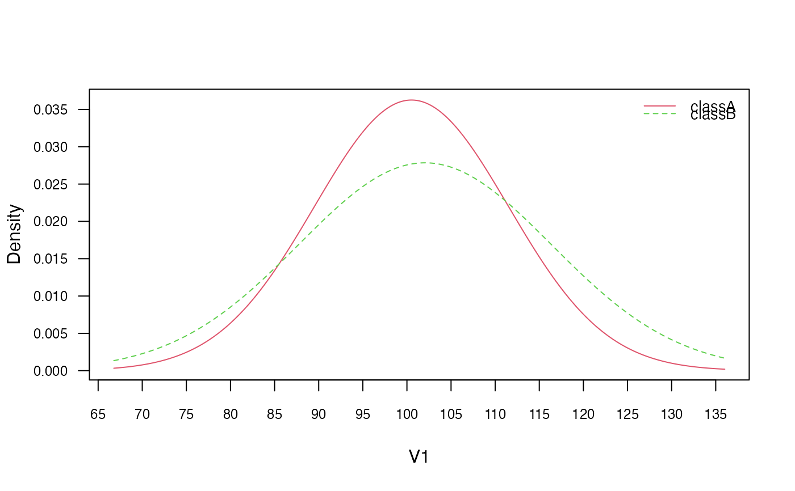
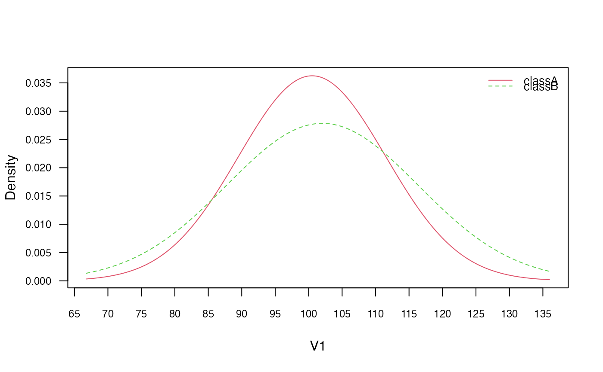

Gaussian Naive Bayes Classifier
gaussian_naive_bayes.Rdgaussian_naive_bayes is used to fit the Gaussian Naive Bayes model in which all class conditional distributions are assumed to be Gaussian and be independent.
gaussian_naive_bayes(x, y, prior = NULL, ...)Arguments
- x
numeric matrix with metric predictors (matrix or dgCMatrix from Matrix package).
- y
class vector (character/factor/logical).
- prior
vector with prior probabilities of the classes. If unspecified, the class proportions for the training set are used. If present, the probabilities should be specified in the order of the factor levels.
- ...
not used.
Value
gaussian_naive_bayes returns an object of class "gaussian_naive_bayes" which is a list with following components:
- data
list with two components:
x(matrix with predictors) andy(class variable).- levels
character vector with values of the class variable.
- params
list with two matrices, first containing the class conditional means and the second containing the class conditional standard deviations.
- prior
numeric vector with prior probabilities.
- call
the call that produced this object.
Details
This is a specialized version of the Naive Bayes classifier, in which all features take on real values (numeric/integer) and class conditional probabilities are modelled with the Gaussian distribution.
The Gaussian Naive Bayes is available in both, naive_bayes and gaussian_naive_bayes.The latter provides more efficient performance though. Faster calculation times come from restricting the data to a matrix with numeric columns and taking advantage of linear algebra operations. Sparse matrices of class "dgCMatrix" (Matrix package) are supported in order to furthermore speed up calculation times.
The gaussian_naive_bayes and naive_bayes() are equivalent when the latter is used with usepoisson = FALSE and usekernel = FALSE; and a matrix/data.frame contains numeric columns.
The missing values (NAs) are omited during the estimation process. Also, the corresponding predict function excludes all NAs from the calculation of posterior probabilities (an informative warning is always given).
See also
Examples
# library(naivebayes)
cols <- 10 ; rows <- 100
M <- matrix(rnorm(rows * cols, 100, 15), nrow = rows, ncol = cols)
y <- factor(sample(paste0("class", LETTERS[1:2]), rows, TRUE, prob = c(0.3,0.7)))
colnames(M) <- paste0("V", seq_len(ncol(M)))
### Train the Gaussian Naive Bayes
gnb <- gaussian_naive_bayes(x = M, y = y)
summary(gnb)
#>
#> ============================== Gaussian Naive Bayes ==============================
#>
#> - Call: gaussian_naive_bayes(x = M, y = y)
#> - Samples: 100
#> - Features: 10
#> - Prior probabilities:
#> - classA: 0.36
#> - classB: 0.64
#>
#> ----------------------------------------------------------------------------------
# Classification
head(predict(gnb, newdata = M, type = "class")) # head(gnb %class% M)
#> [1] classA classB classB classB classB classB
#> Levels: classA classB
# Posterior probabilities
head(predict(gnb, newdata = M, type = "prob")) # head(gnb %prob% M)
#> classA classB
#> [1,] 0.5228152 0.4771848
#> [2,] 0.3313942 0.6686058
#> [3,] 0.3945457 0.6054543
#> [4,] 0.3577109 0.6422891
#> [5,] 0.3817901 0.6182099
#> [6,] 0.2904216 0.7095784
# Parameter estimates
coef(gnb)
#> classA:mu classA:sd classB:mu classB:sd
#> V1 96.46241 16.78418 101.37890 15.41837
#> V2 101.32396 14.33811 98.67726 13.76695
#> V3 102.49573 17.95789 97.33443 16.47972
#> V4 97.64387 13.78115 98.74141 12.14514
#> V5 101.42802 14.50050 102.58766 15.12213
#> V6 105.65425 15.69054 100.48270 14.95385
#> V7 100.88697 12.95860 98.49780 14.58758
#> V8 99.70947 18.19631 101.57608 16.04798
#> V9 102.62826 11.95488 99.58269 16.00058
#> V10 99.45408 15.01478 98.27481 13.47851
### Sparse data: train the Gaussian Naive Bayes
library(Matrix)
M_sparse <- Matrix(M, sparse = TRUE)
class(M_sparse) # dgCMatrix
#> [1] "dgCMatrix"
#> attr(,"package")
#> [1] "Matrix"
# Fit the model with sparse data
gnb_sparse <- gaussian_naive_bayes(M_sparse, y)
# Classification
head(predict(gnb_sparse, newdata = M_sparse, type = "class"))
#> [1] classA classB classB classB classB classB
#> Levels: classA classB
# Posterior probabilities
head(predict(gnb_sparse, newdata = M_sparse, type = "prob"))
#> classA classB
#> [1,] 0.5228152 0.4771848
#> [2,] 0.3313942 0.6686058
#> [3,] 0.3945457 0.6054543
#> [4,] 0.3577109 0.6422891
#> [5,] 0.3817901 0.6182099
#> [6,] 0.2904216 0.7095784
# Parameter estimates
coef(gnb_sparse)
#> classA:mu classA:sd classB:mu classB:sd
#> V1 96.46241 16.78418 101.37890 15.41837
#> V2 101.32396 14.33811 98.67726 13.76695
#> V3 102.49573 17.95789 97.33443 16.47972
#> V4 97.64387 13.78115 98.74141 12.14514
#> V5 101.42802 14.50050 102.58766 15.12213
#> V6 105.65425 15.69054 100.48270 14.95385
#> V7 100.88697 12.95860 98.49780 14.58758
#> V8 99.70947 18.19631 101.57608 16.04798
#> V9 102.62826 11.95488 99.58269 16.00058
#> V10 99.45408 15.01478 98.27481 13.47851
### Equivalent calculation with general naive_bayes function.
### (no sparse data support by naive_bayes)
nb <- naive_bayes(M, y)
summary(nb)
#>
#> ================================== Naive Bayes ==================================
#>
#> - Call: naive_bayes.default(x = M, y = y)
#> - Laplace: 0
#> - Classes: 2
#> - Samples: 100
#> - Features: 10
#> - Conditional distributions:
#> - Gaussian: 10
#> - Prior probabilities:
#> - classA: 0.36
#> - classB: 0.64
#>
#> ---------------------------------------------------------------------------------
head(predict(nb, type = "prob"))
#> classA classB
#> [1,] 0.5228152 0.4771848
#> [2,] 0.3313942 0.6686058
#> [3,] 0.3945457 0.6054543
#> [4,] 0.3577109 0.6422891
#> [5,] 0.3817901 0.6182099
#> [6,] 0.2904216 0.7095784
# Obtain probability tables
tables(nb, which = "V1")
#>
#> ---------------------------------------------------------------------------------
#> ::: V1 (Gaussian)
#> ---------------------------------------------------------------------------------
#>
#> V1 classA classB
#> mean 96.46241 101.37890
#> sd 16.78418 15.41837
#>
#> ---------------------------------------------------------------------------------
tables(gnb, which = "V1")
#>
#> ---------------------------------------------------------------------------------
#> ::: V1 (Gaussian)
#> ---------------------------------------------------------------------------------
#> classA classB
#> mu 96.46241 101.37890
#> sd 16.78418 15.41837
#>
#> ---------------------------------------------------------------------------------
# Visualise class conditional Gaussian distributions
plot(nb, "V1", prob = "conditional")
 plot(gnb, which = "V1", prob = "conditional")

# Check the equivalence of the class conditional distributions
all(get_cond_dist(nb) == get_cond_dist(gnb))
#> [1] TRUE
plot(gnb, which = "V1", prob = "conditional")

# Check the equivalence of the class conditional distributions
all(get_cond_dist(nb) == get_cond_dist(gnb))
#> [1] TRUE